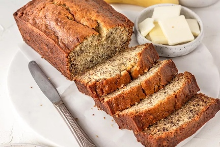

Banana Bread

What makes this banana bread so amazing?
The beauty of this banana bread recipe is you don't need a fancy mixer! A mixing bowl, a fork
to whisk the eggs, and a sturdy spoon to mix the batter are all you need. The sugar amount is
flexible. The original recipe called for a cup of white sugar, but most people, including me, do
just fine with 3/4 cup, and many are happy with 1/2 cup.
It really is the best banana bread recipe, period. You can mix everything in one bowl, you can
vary the amount of sugar or bananas. And the secret to its great flavor? Melted butter.
Steps
- Preheat the oven to 350°F (175°C), and butter an 8 x 4-inch loaf pan.
-
In a mixing bowl, mash the ripe bananas with a fork until completely smooth. Stir the melted butter
into the mashed bananas.
- Mix in the baking soda and salt. Stir in the sugar, beaten egg, and vanilla extract. Mix in the flour.
- Pour the batter into your prepared loaf pan.
-
Bake for 55 to 65 minutes at 350°F (175°C), or until a toothpick or wooden skewer inserted into
the center comes out clean. A few dry crumbs are okay; streaks of wet batter are not. If the
outside of the loaf is browned but the center is still wet, loosely tent the loaf with foil and
continue baking until the loaf is fully baked.
-
Remove from oven and let cool in the pan for a few minutes. Then remove the banana bread from
the pan and let cool completely before serving. Slice and serve. (A bread knife helps to make
slices that aren't crumbly.)
Ingredients
- 2 to 3 medium (7" to 7-7/8" long) very ripe bananas, peeled (about 1 1/4 to 1 1/2 cups mashed)
- 1/3 cup (76g) butter, unsalted or salted, melted
- 1/2 teaspoon baking soda (not baking powder)
- 1 pinch salt
- 3/4 cup (150g) sugar (1/2 cup if you would like it less sweet, 1 cup if more sweet)
- 1 large egg, beaten
- 1 teaspoon vanilla extract
- 1 1/2 cups (205g) all-purpose flour